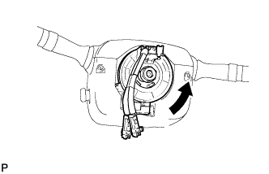
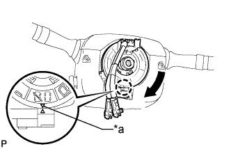

STEERING ANGLE SENSOR > INSTALLATION |
| 1. INSTALL SPIRAL WITH SENSOR CABLE SUB-ASSEMBLY |
Install the spiral with sensor cable sub-assembly (Click here).
| 2. INSTALL STEERING COLUMN UPPER COVER |
Attach the claw to install the steering column upper cover.
Attach the 4 clips to install the steering column upper cover to the instrument cluster finish panel.
| 3. INSTALL STEERING COLUMN LOWER COVER |
Attach the 2 claws to install the steering column lower cover.
Install the 3 screws.
| 4. ADJUST SPIRAL WITH SENSOR CABLE SUB-ASSEMBLY |
Turn the engine switch off.
Disconnect the cable from the negative (-) battery terminal.
|  |
Rotate the spiral cable with steering sensor counterclockwise slowly by hand until it feels firm.
|  |
Rotate the spiral cable with steering sensor clockwise approximately 2.5 turns to align the marks.
| *a | Mark |
| 5. INSTALL STEERING WHEEL ASSEMBLY |
Install the steering wheel assembly (Click here).
| 6. CONNECT CABLE TO NEGATIVE BATTERY TERMINAL |
| 7. CHECK SRS WARNING LIGHT |
Check the SRS warning light (Click here).